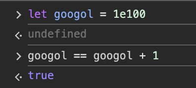

The Structure and Interpretation of Computer Programs (SICP) often called the "wizard book", teaches the core principles of programing using Scheme, a dialect of Lisp. Lisp is a programming language that was used back in the day to support such an important area of computer science, Artificial Intelligence.
Exercise 1.3: Define a procedure that takes three numbers as arguments and returns the sum of the squares of the two larger numbers.
(define (add_larger_sqrs a b c)
(if (> a b)
(if (> b c) (sum-of-squares a b)
(sum-of-squares a c)
)
(if (> a c) (sum-of-squares b a)
(sum-of-squares b c))
)
)
(define (two_largest_numbers a b c)
(if (> a b)
(if (> b c) (list a b)
(list a c)
)
(if (> c a) (list b c)
(list a b)
)
))
(define (add_largest_sqrs a b c)
(apply sum-of-squares (two_largest_numbers a b c)))
Exercise 1.4: Observe that our model of evaluation allows for combinations whose operators are compound expressions. Use this observation to describe the behavior of the following procedure:
(define (a-plus-abs-b a b)
((if (> b 0) + -) a b))
(define (a-plus-abs-b a b)
((if (> b 0) + -) a b))
(define (a-plus-b a b)
(+ a b))
Exercise 1.5: Ben Bitdiddle has invented a test to determine whether the interpreter he is faced with is using applicative-order evaluation or normal-order evaluation. He defines the following two procedures:
(define (p) (p))
(define (test x y)
(if (= x 0) 0 y))
Then he evaluates the expression:
(define (p) (p))
(define (test x y)
(if (= x 0) 0 y))
What behavior will Ben observe with an interpreter that uses applicative-order evaluation? What behavior will he observe with an interpreter that uses normal-order evaluation? Explain your answer. (Assume that the evaluation rule for the special form if is the same whether the interpreter is using normal or applicative order: The predicate expression is evaluated first, and the result determines whether to evaluate the consequent or the alternative expression.)
(test 0 (p))
(if (= 0 0) 0 (p))
0
As we see in the example above, the normal-order evaluation doesn't care for the value of p. It just gives the answer of 0. However, let's now do the applicative-order evaluation for this expresion.
(test 0 (p))
∞
When running this command, it will cause an infinite loop. At the right is shown what it looks like at the bottom of the screen when I run the code using DrRacket.
Exercise 1.6: Alyssa P. Hacker doesn’t see why if needs to be provided as a special form. “Why can’t I just define it as an ordinary procedure in terms of cond?” she asks. Alyssa’s friend Eva Lu Ator claims this can indeed be done, and she defines a new version of if:
(define (new-if predicate then-clause else-clause)
(cond (predicate then-clause)
(else else-clause)))
Eva demonstrates the program for Alyssa:
(new-if (= 2 3) 0 5)
5
(new-if (= 1 1) 0 5)
0
Delighted, Alyssa uses new-if to rewrite the square-root program:
(define (sqrt-iter guess x)
(new-if (good-enough? guess x)
guess
(sqrt-iter (improve guess x) x)))
What happens when Alyssa attempts to use this to compute square roots? Explain.
Exercise 1.7:
Exercise 1.7.1: The good-enough? test used in computing square roots will not be very effective for finding the square roots of very small numbers. Also, in real computers, arith-metic operations are almost always performed with limited precision. This makes our test inadequate for very large numbers. Explain these statements, with examples showing how the test fails for small and large numbers.
This statement is the easy one to perceive at first glance. The issue with the good-enough? procedure is that it compares the absolute difference of the guess, and the x value, against a specific quantity such as 0.001. Thus, when it receives as input a number that is smaller than that quantity, at a certain point the guess will be enough to satisfy the condition when the arithmetic is done in the good-enough? procedure. However, it will be far away to the real square root. For example, let's take the number 0.000000000009. The real square root of this number is 0.000003, but this square-root program returns the value of 0.03125000009590625. What ended up happening, is that the improve procedure started to give the following numbers as the guess through every iteration: 0.5000000000045, 0.25000000001125, 0.125000000023625, 0.06250000004781249, and the last, 0.03125000009590625. Now, why is this the last? It is because of the following calculation in the good-enough? procedure: (< (abs (- (square guess) x)) 0.001). Therefore, this occur:
(< (abs (- (square 0.03125000009590625) 0.000000000009)) 0.001)
(< (abs (- (* 0.03125000009590625 0.03125000009590625) 0.000000000009)) 0.001)
(< (abs (- 0.0009765625059941405 0.000000000009)) 0.001)
#t
Which the result is true, thus the number 03125000009590625 according to this algorithm is the square root of 0.000000000009. Nonetheless, as mentioned before the real square root is 0.000003. This example crearly shows the fauls of this algorithm for really small numbers, but in a more clear way to say it, this algorithm will not work for numbers that are smallers than the fixed number in the good-enough? procedure.
This problem is related to floating-point precision. As mentioned before, in computers huge numbers are not affected by smaller numbers at a certain distance. Consider this example, try this in your browser console:
let googol = 1e100
googol == googol + 1
This should return something like this:
So, according to that, we can now state that floating-point numbers deals arithmetics with their own rules. Another example could be with the number 1e49. If we do the following code in javascript:
let exactSqrt = Math.sqrt(1e49) // this returns 3.162277660168379e+24
exactSqrt * exactSqrt // the value returned is 9.999999999999998e+48
This is important to understand better floating-point precision. As we can notice, the square root of 1e49 is 3.162277660168379e+24; however, this number squared does not give the exact same value, as if we were working with a small number. This leads us to the good-enough? procedure. Same as the last time, lets analyze this example. Supose that we iterate until we get this number 3.162308428500741e+24 as our guess. What will happen next is something like this:
(< (abs (- (square guess) x)) 0.001)
(< (abs (- (square 3.162308428500741e+24) 1e49)) 0.001)
(< (abs (- (* 3.162308428500741e+24 3.162308428500741e+24) 1e49)) 0.001)
(< (abs (- 1.0000194596966827e+49 1e49)) 0.001)
#f
Why does it return false? Although the numbers looks really close, they are actually not. They are different for a large chain of numbers. We have to remember that these are floating-point numbers, and they represent a large sequence of numbers not just the ones that are written down. Therefore, what will happen after it, is that procedures like improve and average, they are really not going to change the number at all anymore, because of floating-point arithmetic. This ending in an infinite loop or in an infinite call of functions, what will exceed at some point the maximun call stack.
Exercise 1.7.2: An alterna-tive strategy for implementing good-enough? is to watch how guess changes from one iteration to the next and to stop when the change is a very small fraction of the guess. Design a square-root procedure that uses this kind of end test. Does this work better for small and large numbers?